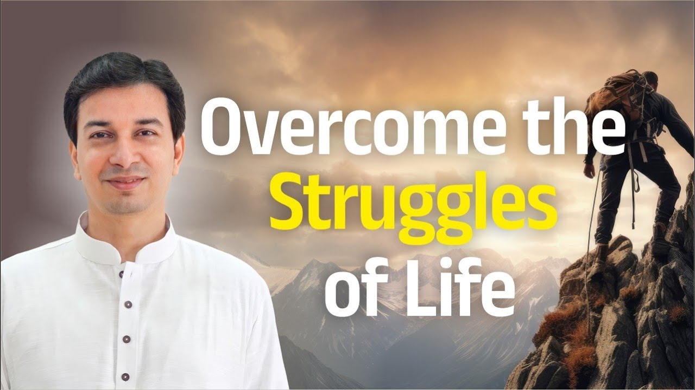

डॉक्टर ने कहा, "इसका कोई इलाज नहीं है।" और हम डर गए। फिर पूरा जीवन उसी बीमारी के साथ बैठ गए।
कभी कोई रिश्ता टूटता है, किसी से झगड़ा होता है, और हम उस झगड़े को जन्मों-जन्मों तक ढोते रहते हैं। कभी धन की कमी, दरिद्रता, नौकरी न होना, और पूरा जीवन ऐसे ही बीत जाता है।
तो असली प्रश्न यह है: यह स्थिति बदलती क्यों नहीं?
गीता का पहला उपदेश क्या है?
इस प्रश्न का उत्तर पाने के लिए हमें भगवद्गीता खोलनी होगी, दूसरा अध्याय, चौदहवां श्लोक। यहीं श्रीकृष्ण अर्जुन को अपना पहला उपदेश देते हैं।
वे कहते हैं, तू जिस स्थिति में है, वह कुछ प्रारब्ध (पिछले कर्मों का फल) से आई होगी, कुछ वैसे कर्म रहे होंगे, कुछ वैसे संस्कार (मन पर पड़ी छापें) रहे होंगे।
मात्रास्पर्शास्तु कौन्तेय शीतोष्णसुखदुःखदाः।
आगमापायिनोऽनित्यास्तांस्तितिक्षस्व भारत॥
"हे कुंतीपुत्र, सर्दी-गर्मी और सुख-दुःख देने वाले इंद्रियों और विषयों के संयोग आते-जाते रहते हैं, ये अनित्य हैं। हे भारत, तू इन्हें सहन कर।"
(श्रीमद्भगवद्गीता २.१४)
द्वंद्व: जीवन के विपरीत जोड़े
सर्दी-गर्मी शरीर के स्तर पर आने वाले द्वंद्व (pairs of opposites) हैं। सुख-दुःख मन के स्तर पर आने वाले द्वंद्व हैं।
इन्हें ही अनुकूल और प्रतिकूल परिस्थितियां कहते हैं। जीवन में ये उतार-चढ़ाव आते ही रहेंगे।
ये आते कहां से हैं? हमारी इंद्रियों और बाहर के विषयों के मेल से। जीभ है तो भोजन है, चाहे इडली-सांभर हो या कुछ और। कान हैं तो संगीत है, शब्द हैं। शब्द, स्पर्श, रूप, रिश्ते, पंच महाभूत, सब संपर्क में आते हैं, और उस संयोग से या तो सुख जन्म लेता है या दुःख।
पर श्रीकृष्ण इनके बारे में दो बातें कहते हैं: ये उत्पत्ति-विनाशशील हैं, और अनित्य (अस्थायी) हैं।
तो फिर रोग स्थायी कैसे?
यहीं गुरु एक सीधा प्रश्न रखते हैं। कोई चिकित्सक यह कैसे कह सकता है कि कैंसर स्थायी है? या मधुमेह हो गया तो अब जीवन भर रहेगा? जबकि स्वयं श्रीकृष्ण कहते हैं कि यह अनित्य है। आचार्य जी कहते हैं कि कुछ भी स्थायी नहीं है, केवल परिवर्तन ही स्थिर है, और परिवर्तन होना ही चाहिए। यही बात दरिद्रता पर भी लागू होती है। जो स्थिति उत्पन्न हुई है, उसका विनाश भी होना चाहिए; आपका विनाश नहीं, उस स्थिति का विनाश होना चाहिए।
आप अपने जीवन की किस स्थिति को "स्थायी" मानकर उसके साथ जी रहे हैं?
पर एक बात ध्यान रखिए: वह स्थिति अपने आप नहीं जाएगी। उसके लिए कुछ करना होगा।
सहनशीलता: पहला कदम, मंजिल नहीं
श्रीकृष्ण का पहला उपदेश है, तितिक्षा, यानी सहन करना। पर क्या यही अंतिम उपदेश है?
ज़रा देखिए। पहले अध्याय में केवल अर्जुन बोलते हैं। दूसरे अध्याय में भी दसवें श्लोक तक अर्जुन ही बोलते हैं। ग्यारहवें श्लोक से श्रीकृष्ण की वाणी शुरू होती है, और चौदहवें श्लोक में ही यह पहली बात आती है।
समस्या यह है कि मनुष्य ठीक से सहन भी नहीं कर पाता। और श्रीकृष्ण ने यह कभी नहीं कहा कि "सहन करते-करते पूरी आयु निकाल दो।" सहन करने के बाद अठारहवें अध्याय तक की पूरी यात्रा बाकी है।
गीता की अठारह अध्यायों की यात्रा
सहनशीलता के बाद गीता एक पूरी प्रक्रिया बताती है:
- तीसरा अध्याय, कर्मयोग: कुछ नया कर्म करना होगा। केवल कर्म नहीं, योग, यानी कुछ जोड़ना होगा।
- चौथा अध्याय, यज्ञ: यज्ञ शब्द "यज्" धातु से आया है, जिसका अर्थ है त्याग करना (to sacrifice)। यह केवल बाहरी अनुष्ठान नहीं है।
- पांचवां अध्याय: भक्ति की बात।
- छठा अध्याय: साधना कैसे करनी है, ध्यान की अवस्था।
- सातवें से बारहवें अध्याय तक: "मैं ही वह ब्रह्म कैसे हूं," यह जानने की प्रक्रिया; ग्यारहवें अध्याय में विराट रूप का वर्णन।
- तेरहवें से अठारहवें अध्याय तक: यह सब कैसे घटित होता है, और तीन गुण क्या हैं।
इस तरह कर्म, भक्ति, ज्ञान और ध्यान, चारों योग समझाए गए हैं।
अगर पहला उपदेश ही सब कुछ होता, तो श्रीकृष्ण अर्जुन को इतनी लंबी प्रक्रिया क्यों बताते?
सार: मुख्य बातें
- कोई भी कठिन स्थिति, चाहे रोग हो, टूटा रिश्ता हो या दरिद्रता, स्थायी नहीं है।
- सुख-दुःख इंद्रियों और विषयों के संयोग से जन्म लेते हैं, और वे अनित्य हैं (गीता २.१४)।
- जो स्थिति उत्पन्न हुई है, उसका विनाश होना चाहिए; आपका नहीं, उस स्थिति का।
- स्थिति अपने आप नहीं बदलेगी, उसके लिए कुछ करना होगा।
- सहन करना गीता का पहला उपदेश है, अंतिम नहीं।
- उसके बाद कर्म, यज्ञ, भक्ति, ध्यान और ब्रह्मज्ञान की पूरी यात्रा है।
